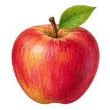
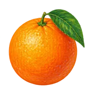
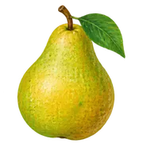
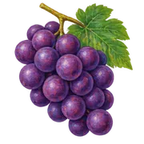

What's in the bowl?Australia grows a wide variety of fruit, but production is concentrated in particular regions. Follow where it grows, how production is changing, and where some of it goes overseas.
Oranges take the biggest share by weight
Oranges make up 20% of the 2.835 million tonnes reported in 2024–25.
Table grapes lead by value
The ten highest-value fruits, ranked by farmgate value in 2024–25.
Data notes
Dots compare values on a common scale; no hierarchy is implied. This chart shows the ten largest values, while the $7.33 billion total includes all 29 categories. Colours match comparison fruits elsewhere; other categories use a neutral colour. Estimates supplied by Hort Innovation.

Where it growsDifferent fruits come from different parts of Australia. Compare the states first, then look more closely at the growing regions of bananas and avocados.
Some fruits depend heavily on one state
94% of bananas come from Queensland, 85% of blueberries from NSW, and 81% of pears from Victoria.
State names and data notes
NSW: New South Wales; VIC: Victoria; QLD: Queensland; SA: South Australia; WA: Western Australia; TAS: Tasmania; NT: Northern Territory; ACT: Australian Capital Territory.
Different fruits, different growing states
Reported production per square kilometre of state land, 2024–25.
Data notes
“All reported fruit” sums available categories in ABS Table 2. The sequential colour scale adjusts for each fruit; colours should not be compared across different selections.
Zooming in on the growing regions
Bananas cluster in tropical North Queensland; avocados have another major production centre in south-west WA.
Regional coverage
This case study uses SA2 2021 geography. Detailed regional estimates are available for bananas and avocados, but not every fruit. Nearby circles may overlap in the national view; the close-ups retain their geographic positions. Rounded regional sums differ slightly from national totals.
What makes up each state's harvest?
Queensland's banana links and NSW's orange links stand out. Link widths compare reported tonnes across ten fruits in 2024–25.
Coverage and layout
Only positive reported observations are linked. ACT has no positive reported observations in this comparison. d3-sankey calculates the layout during preparation; Vega draws the diagram. Highlighting a state retains all node positions and the original scale.

How it has changedFruit production has changed unevenly. Some crops have grown substantially, while others have declined. Production volume tells one part of the story; the value of that fruit tells another.
More avocados and mandarins, fewer pears
Between 2020–21 and 2024–25: avocados +68%, mandarins +45%, and pears −42%.
The value rankings have shifted
Table grapes stayed first among these ten fruits; bananas and avocados both finished above apples.
More fruit does not always mean more value
Production volume and farmgate value do not always move together. Each labelled point is one financial year.
Interpreting value
Farmgate values are nominal, not inflation-adjusted or supermarket prices. This chart does not establish what caused a change in value.
Where did the increase in value come from?
A $1.486 billion increase in reported fruit value, with table grapes and avocados the largest individual contributors, 2020–21 to 2024–25.

Beyond our bordersAustralia exports fruit to markets across Asia, the Pacific and beyond. Different fruits have different overseas destinations, so this final map compares five export categories.
Where Australian fruit goes overseas
Eight largest destinations by export volume, calendar 2025. Route colours match destinations in the table.
| Destination | Tonnes | Share |
|---|
Trade coverage and map notes
The categories are fresh grapes, fresh apples, oranges, mandarins and related citrus, and fresh strawberries. Citrus codes include fresh or dried fruit; mandarins include clementines and similar citrus. Paths connect representative country locations, not ports or actual shipping routes. Exports cover January–December 2025; production charts use financial years. Percentages use each selection's full world export total, including destinations not mapped.
Australia's fruit production is varied, but individual crops depend on particular growing regions. Changes in production and value differ by fruit, and overseas markets add another part to the story.